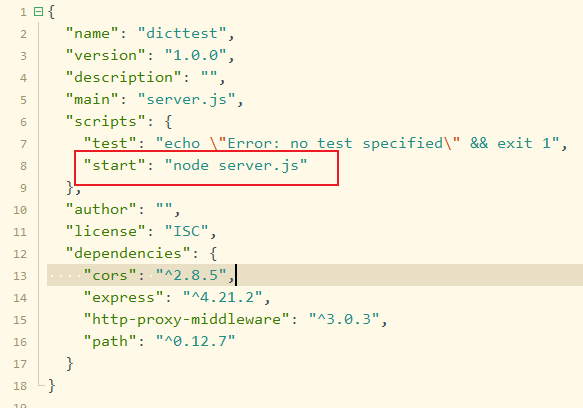
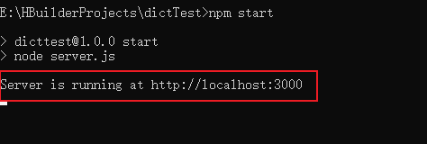
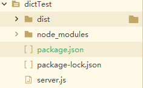

基于NodeJs和Express搭建本地测试服务器
本文最后更新于 2025年1月10日 下午
搭建本地测试服务器是开发阶段的一个重要工具，能够解决跨域问题、模拟真实环境、方便调试与测试，并提高开发效率。尤其在前后端分离的项目中，它能够极大地优化开发体验，减少对远程环境的依赖
创建项目
创建一个目录 dictTest 在里面创建一个 server.js 文件
1 | |
CORS：
- 使用了
cors中间件，允许跨域请求，从而便于前端和后端本地开发时的跨域通信
静态文件服务：
- 将
dist目录中的内容暴露为静态资源目录，适用于打包后的前端文件部署
代理配置：
- 使用
http-proxy-middleware将/prod-api的请求代理到实际的后端 API 地址http://192.168.1.52:8888，并将路径前缀/prod-api移除 - 适合在开发过程中避免跨域问题，同时将 API 请求指向实际的后端
服务器监听：
- 监听在端口
3000，提供服务
安装依赖
先初始化 创建一个 package.json 文件
1 | |
安装 express 框架，path，http-proxy-middleware 中间价，cors 跨域
1 | |
查看 package.json 文件 启动项目
1 | |
把项目打包之后生成的 dist 文件夹 放置进来
看到打印的路径代表启动成功
目录结构
基于NodeJs和Express搭建本地测试服务器
https://kitenx.github.io/huyanqun.github.io/2025/01/10/基于NodeJs和Express搭建本地测试服务器/